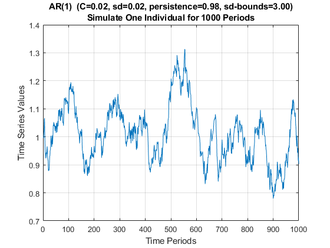

Chapter 5 Panel
5.1 Time Series
5.1.1 Simulate AR(1) Autoregressive Processes
Go back to fan’s MEconTools Package, Matlab Code Examples Repository (bookdown site), or Math for Econ with Matlab Repository (bookdown site).
5.1.1.1 Mean and Standard Deviation for AR(1) Autoregressive Process
A first-order autoregressive process can be written as:
AR1: \(X_t =\textrm{constant}+\textrm{persistence}\cdot x_{t-1} +\epsilon\)
AR1: \(X_t =C+\rho \cdot x_{t-1} +\epsilon\)
Assume that \(\epsilon\) is mean zero
Note that, we know the mean of \(X\):
\(\displaystyle \mu_X =C+\rho \cdot \mu_X +0\)
\(\displaystyle \mu_x =\frac{C}{1-\rho }\)
Note that, we also know the standard deviation of \(X\):
\(\displaystyle \textrm{var}\left(X\right)=\rho^2 \cdot \textrm{var}\left(X\right)+\textrm{var}\left(\epsilon \right)\)
\(\displaystyle \sigma_x =\sqrt{\frac{\sigma_{\epsilon }^2 }{1-\rho^2 }}\)
We will let the initial point of the time series follow the stationary distribution of the AR(1) process, then we simulate the time series over 100 periods, in the example below, we use a highly persistent shock process with \(\rho =0.98\), \(\sigma_{\epsilon } =0.02\), \(C=0.02\). Note that for this process:
\(\displaystyle \mu_x^{\rho =0.98,\sigma_{\epsilon } =0.02,C=0.02} =\frac{0.02}{1-0.98}=1\)
\(\displaystyle \sigma_x^{\rho =0.98,\sigma_{\epsilon } =0.02,C=0.02} =\sqrt{\frac{0.02^2 }{1-0.98^2 }}\approx 0.10\)
5.1.1.2 Simulated one First-Order Autoregressive Time-Series
In the Example below, we simulate an individual for 1000 periods, given \(\rho =0.98\), \(\sigma_{\epsilon } =0.02\), \(C=0.02\). Given that the process is highly persistent, the individual stays rich or poor for dozens of periods at a time. If each period is a year, look at the results below, and suppose the simulated time series is income, what is the process saying about this person’s income rise and fall. Note that we have the same person through all 1000 periods, but if you only look at 50 periods (years), you might this this person during one span is really successful, anothe segment of 50 years, doing really bad, but actually there is nothing changing in the person’s type, all that is changing is the person’s luck.
First Set Parameters:
% Number of Time Periods
it_T = 1000;
% Mean and SD of the Shock Process
fl_constant = 0.02;
fl_normal_sd = 0.02;
% Persistence
fl_persistence = 0.98;
% Bounds on Shocks
fl_shk_bnds = 3;
% Initialize with exo fed point or not, if false initialize at Random Point
% from the stationary distribution
bl_init = true;
fl_init = fl_constant/(1 - fl_persistence);Second, generate a vector of normal shocks:
% Generate a normal shock vector (the first draw will be ignored)
it_draws = it_T;
rng(789);
ar_fl_shocks = normrnd(0, fl_normal_sd, 1, it_draws);
disp(ar_fl_shocks(1:20));
Columns 1 through 13
-0.0060 -0.0047 0.0168 0.0118 0.0380 0.0062 -0.0616 -0.0485 -0.0192 0.0023 -0.0197 0.0040 0.0156
Columns 14 through 20
-0.0089 0.0160 0.0099 -0.0200 -0.0206 -0.0090 -0.0069Third, replace any values exceeding bounds:
% out of bounds indicators
fl_shk_bds_lower = 0 - fl_normal_sd*fl_shk_bnds;
fl_shk_bds_upper = 0 + fl_normal_sd*fl_shk_bnds;
ar_bl_outofbounds = (ar_fl_shocks <= fl_shk_bds_lower | ar_fl_shocks >= fl_shk_bds_upper);
% count out of bounds
disp(strcat('lower:', num2str(fl_shk_bds_lower), ', upper:', num2str(fl_shk_bds_upper)));
lower:-0.06, upper:0.06
disp(sum(ar_bl_outofbounds));
4
ar_fl_shocks(ar_fl_shocks <= fl_shk_bds_lower) = fl_shk_bds_lower;
ar_fl_shocks(ar_fl_shocks >= fl_shk_bds_upper) = fl_shk_bds_upper;Fourth, generate the AR(1) time series:
% Initialize Output Array
ar_fl_time_series = zeros(size(ar_fl_shocks));
% Loop over time
for it_t=1:1:length(ar_fl_shocks)
if (it_t == 1)
% initialize using the ean of the process
ar_fl_time_series(1) = fl_constant/(1 - fl_persistence);
if (bl_init)
ar_fl_time_series(1) = fl_init;
end
else
fl_ts_t = fl_constant + ar_fl_time_series(it_t-1)*fl_persistence + ar_fl_shocks(it_t);
ar_fl_time_series(it_t) = fl_ts_t;
end
endFifth, show the mean and sd of the process (these are very close to the analytical results):
disp(mean(ar_fl_time_series));
1.0104
disp(std(ar_fl_time_series));
0.1000Sixth, plot the results:
figure();
% x-axis
ar_it_time = 1:1:length(ar_fl_shocks);
% plot
plot(ar_it_time, ar_fl_time_series);
% Generate Title
ar_fl_params_values = [fl_constant, fl_normal_sd, fl_persistence, fl_shk_bnds];
ar_st_parms_names = ["C", "sd", "persistence", "sd-bounds"];
st_rounding = '.2f';
st_title_main = "AR(1) ";
ar_st_params = strcat(ar_st_parms_names, compose(strcat("=%", st_rounding), ar_fl_params_values));
st_param_pasted = strjoin(ar_st_params, ', ');
st_title_wth_params = strcat(st_title_main, ' (', st_param_pasted, ')');
title({st_title_wth_params, 'Simulate One Individual for 1000 Periods'});
% X and Y labels
ylabel({'Time Series Values'});
xlabel('Time Periods');
grid on;